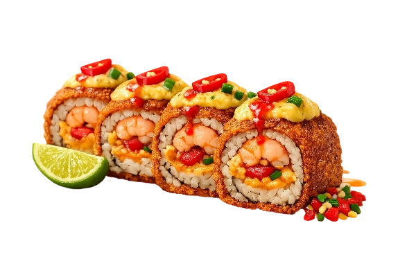
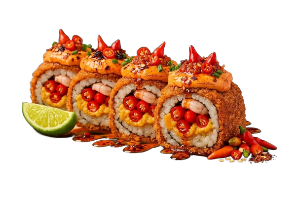
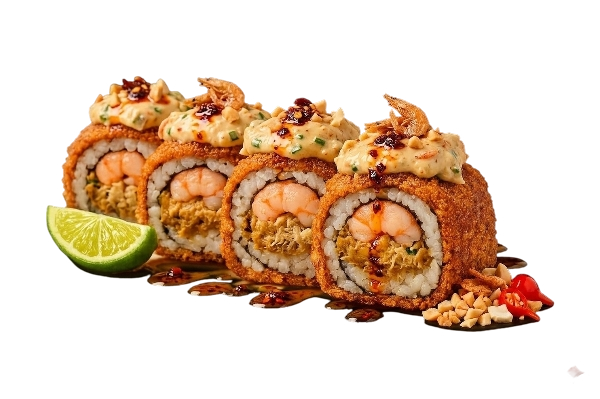
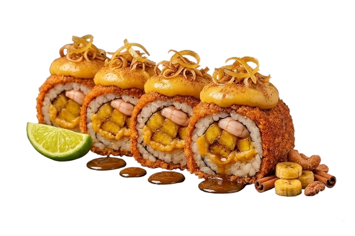
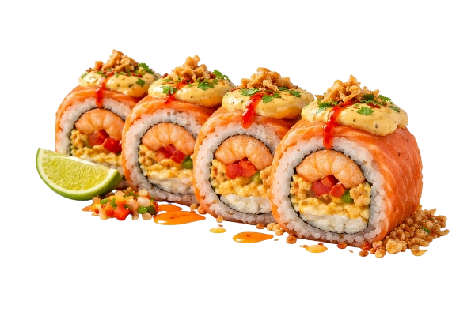
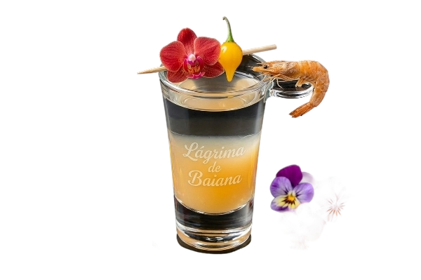
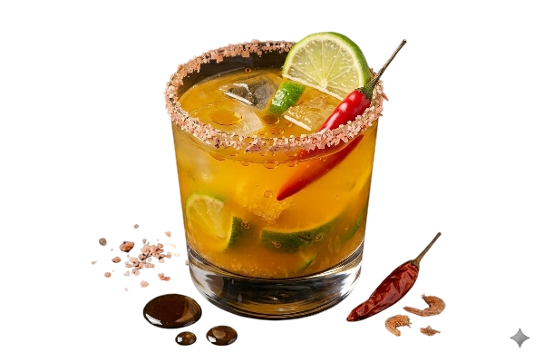
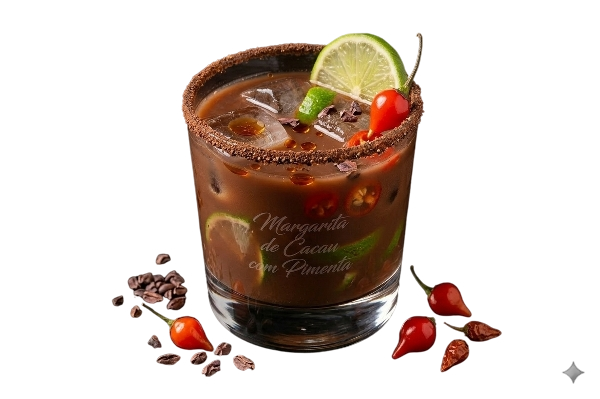
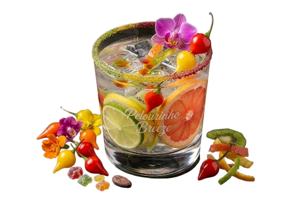

Sushi do Bahiano

Sushi de Acarajé
Camarão suculento com vatapá cremoso e toque de pimenta envolto em uma crosta crocante inspirada no acarajé. Uma explosão em forma de sushi!
R$ 25,00Sushi do Bahiano

Sushi de Nervosa Roll
O sushi mais picante do Brasil, um molho picante que não perdoa. Só para os corajosos!
R$ 20,00Sushi do Bahiano

Sushi de Camarão
O melhor camarão diretamente da Bahia, encontrado diretamente no Mar do Rio São João!
R$ 30,00Sushi do Bahiano

Sushi de Banana Da Terra
O melhor sushi encontrado diretamente da terra do cemitério São Francisco
R$ 18,90Sushi do Bahiano

Sushi de Azeite de Dendê
Sushi fresquinho, com raspas de limão, finalizado no azeite de dendê
R$ 28,99Bebidas do Bahiano

Lágrima de Baiana
Um shot intenso e autêntico que condensa a essência da Bahia em um pequeno copo. Com base em vodka ou cachaça branca, este shot apresenta uma combinação única de caldo de lambão picante e camarão seco
R$ 31,90Bebidas do Bahiano

A Dendê-rinha
A clássica caipirinha brasileira, mas com um toque baiano inconfundível. Esta bebida apresenta a cor amarela vibrante e o sabor aveludado do azeite de dendê, misturado com cachaça artesanal e limão taiti
R$ 35,90Bebidas do Bahiano

Margarita de Cacau com Pimenta
Uma margarita sofisticada que celebra o cacau, fruto emblemático da Bahia. Tequila de alta qualidade, licor de cacau e suco de limão fresco são a base deste coquetel.
R$ 38,00Bebidas do Bahiano

Pelourinho Breeze
Inspirada nas cores vibrantes do Pelourinho, esta gin-tônica é uma explosão de frescor e sabor. Camadas de xaropes orgânicos de manga, morango e hibisco criam um visual deslumbrante, enquanto pedaços de kiwi trazem uma nota cítrica.
R$ 31,00Pedidos
Total: R$0,00
Contatos
Entre em contato conosco:
WhatsApp Instagram